Your verdicts, figure by figure, turned into files. Two passed inspection outright, two are being
fixed (the inspector's exact findings are under each), and the assembler's result plots — which you have
not judged yet — are at the bottom with a question.
The compiled PDF (24 pages, in your side panel) still carries the assembler's figure set; the
integration pass now running swaps these six in, moves the result plots to a supplement, and recompiles.
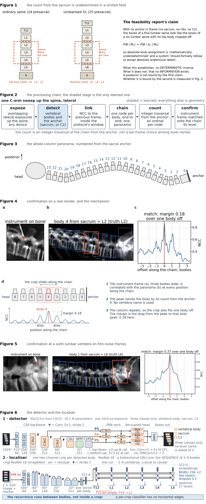
previewThe set, stacked. Figures 1–6 in order.
SchwingNet/figures/fig_set_preview.png
Figure by figure
keptFigure 1. Unchanged, as you asked. The count from the sacrum is
undetermined in a limited field; the paper's objective is the network that resolves it.
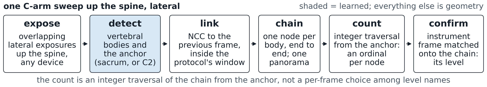
metFigure 2. Same chain, fonts raised so the smallest text prints
above 8 pt at column width, boxes shrunk to their text. Inspector's one note: the inter-box arrows are short
stubs — lengthening them means smaller text, so that trade-off is yours.
SchwingNet/figures/fig2_pipeline.png
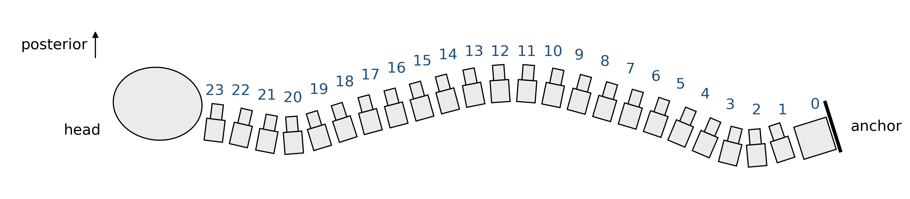
metsmall fixes runningFigure 3. The
focused paper's cartoon extended to all 23 bodies along lordosis–kyphosis–lordosis, prone, head left,
numbered from the sacral anchor, no names. Being nudged: numeral 23 touches the skull outline; numerals 10–14
along the thoracic crest sit tight. SchwingNet/figures/fig3_panorama.png
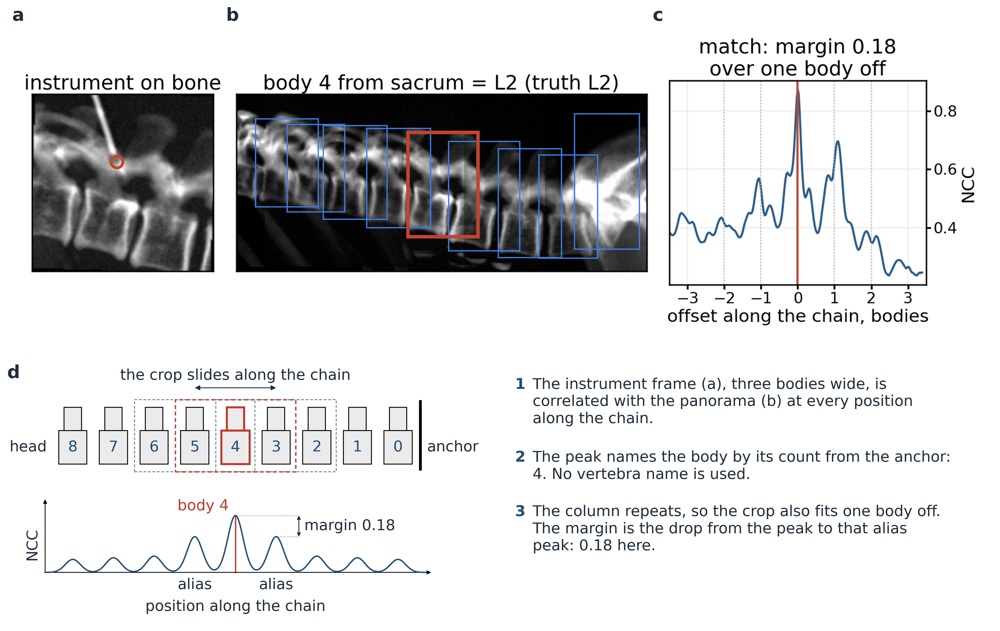
failed, being re-laid outFigure 4. Your panel E plus a fourth
panel explaining it: the crop slid along the chain, the peak under the matched body, the one-body-off peaks a
pitch away, the search window shaded. Why it failed: a–c were placed at 0.82× so their text prints
under 5 pt; the two "one body off" labels collide. Fix: two rows, a–c at full width above, the strip below.
SchwingNet/figures/fig4_confirm.pngkeptFigure 5. Unchanged. A sixth lumbar vertebra counted from the
sacrum on frames styled by the Cios Fusion card; the 0.01 margin is stated as weak.
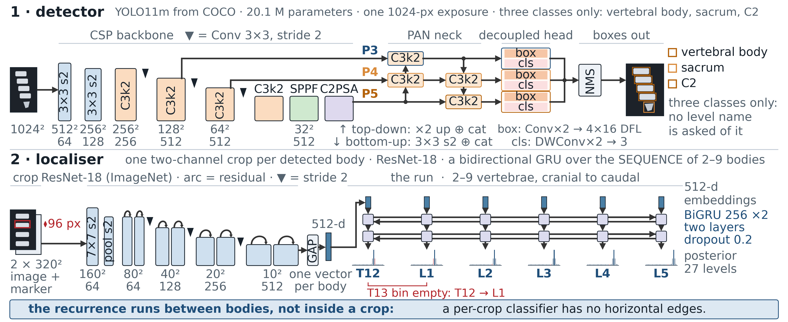
failed, arrows being redrawnFigure 6. Blocks as before. Why it
failed: the residual-skip arrowheads end at a block corner pointing into empty canvas, and on the narrow blocks
the arc is shorter than its head; the recurrence is ten bowties instead of one loop. Fix: elbowed skips landing
on the target's top edge, one bidirectional arrow across the cells, lighter strokes.
SchwingNet/figures/fig6_arch.png
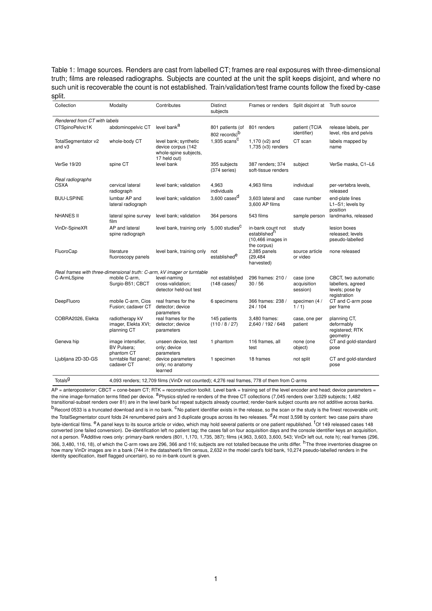
metTable 1 (your panel H as a table), as it fits the column. Being
corrected: the VinDr row mixes an in-bank and a corpus count; the "C-arm frames" header includes a linac
imager; one footnote says 149 cases where the cell says 148.
SchwingNet/tables/tab_corpus.tex
The assembler's result plots — you have not judged these
Your six are all method figures. With the six-figure limit, every result plot below
becomes supplemental (S1–S4) and the numbers live in Tables 2–4. If you want one result figure in
the main text, one of the six has to move to the supplement — Figure 6 (architectures) is the natural
candidate, with the naming curves taking its place. Say which.
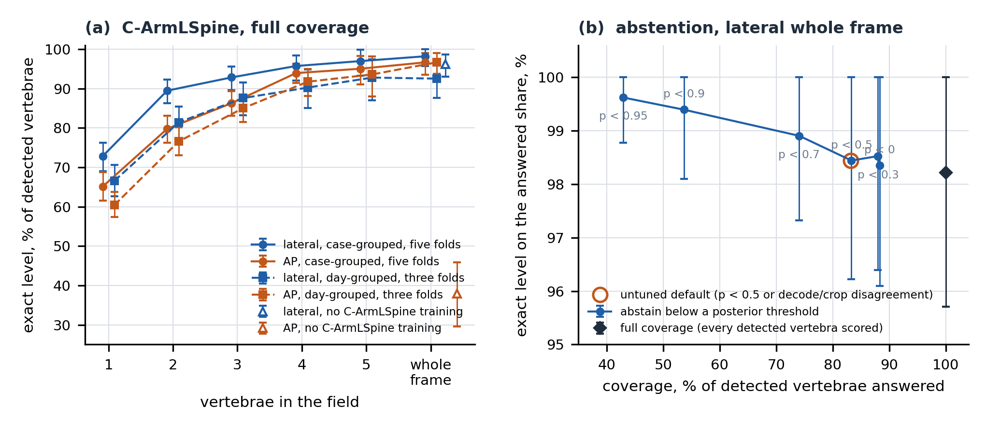
S2 candidateLevel naming on C-ArmLSpine. (a) Exact level against vertebrae in the
field for both fold groupings and the zero-shot model, with case-cluster intervals — this is where the 98.2 vs 92.5
lives. (b) The abstention sweep: coverage against accuracy on the answered share.
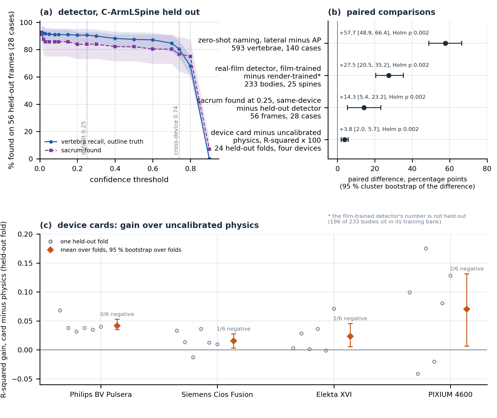
S3 candidateDetection and device cards. (a) Recall against confidence on the
held-out device with the pre-stated operating point. (b) The four paired comparisons with the interval of the
difference. (c) Per-fold gain of the fitted physics terms.
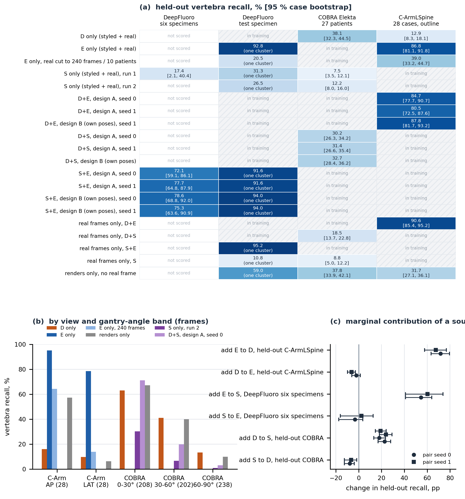
S4 candidateWhich source carries the detector. The matrix behind the reversed
DeepFluoro answer: adding the arc-spanning Elekta source gains 71.8 points on the held-out device; adding the
near-AP cadaver source changes it by −2.1. (You called the earlier version of this too technical; this is
the version the manuscript drew.)
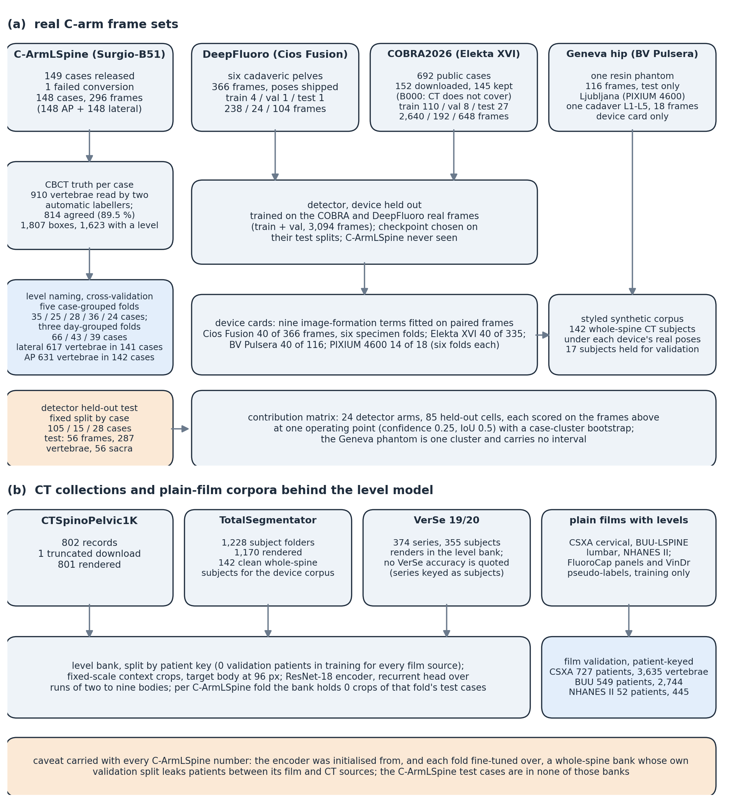
S1 candidateFlow of cases. Required by CLAIM item 33; it can live in the
supplement.
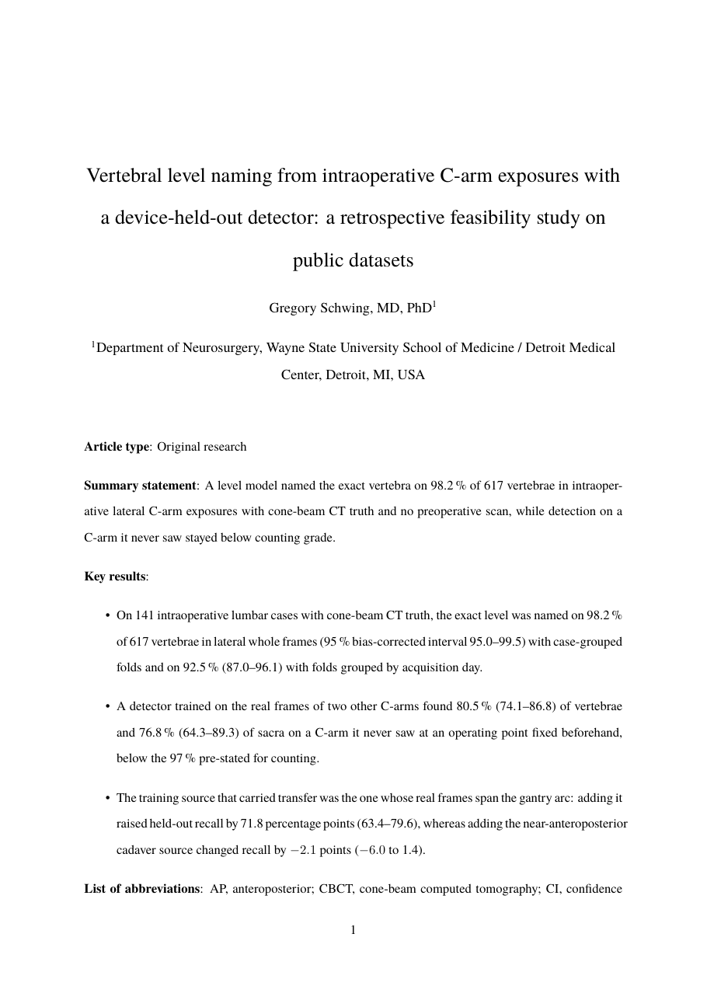
Page 1 of the compiled manuscript as it stands: title, summary statement, three key results.
SchwingNet/main.pdf